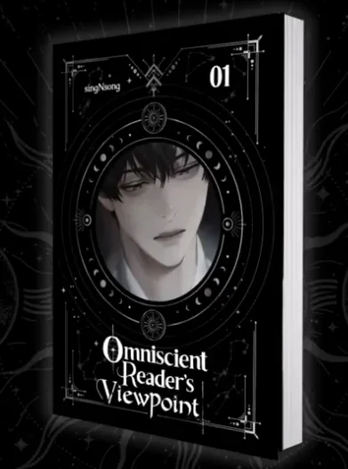

Return of the Mount Hua Sect
Chung Myung awakens a century after the Great War to find his once-glorious sect reduced to ruins, prompting him to revive it by any chaotic means necessary.
PERSONAL HOBBY ARCHIVE
A curated collection of my favorite Korean manhwa and vertical-scroll webtoons—featuring epic regressions, chaotic sects, and legendary swordsmen.

MUST-READ SERIES
Chung Myung awakens a century after the Great War to find his once-glorious sect reduced to ruins, prompting him to revive it by any chaotic means necessary.
An unforgettable journey of a swordsman striving to reach the absolute peak under the guidance of distant starlight and sheer grit.
A reader wakes up inside a fantasy novel as the minor, trashy villain destined to get beaten up, and decides his new goal is living a long, peaceful, wealthy life.